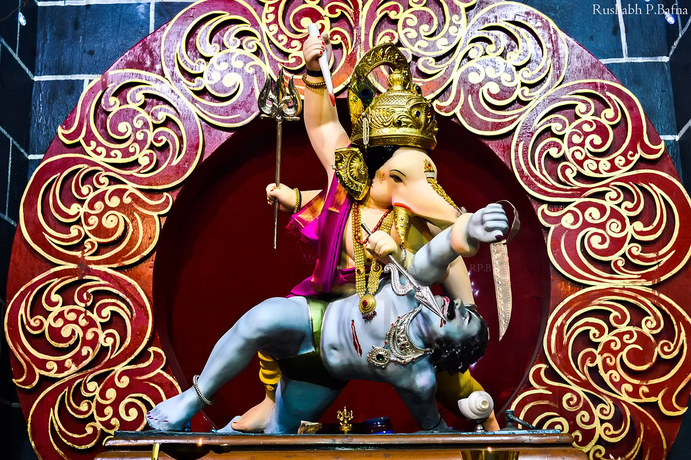

Ganesh festival 2022.
Shrimant Bhausaheb Rangari Ganpati Pune established the first public Ganeshotsav in the year 1892 and did the national work of giving direction to the revolutionary movement of India through the public Ganeshotsav. Shrimant Bhausaheb Rangari Ganpati Pune established the first public Ganeshotsav in the year 1892 and did the national work of giving direction to the revolutionary movement of India through the public Ganeshotsav. Shrimant Bhausaheb Rangari Ganpati Pune established the first public Ganeshotsav in the year 1892 and did the national work of giving direction to the revolutionary movement of India through the public Ganeshotsav. Shrimant Bhausaheb Rangari Ganpati Pune established the first public Ganeshotsav in the year 1892 and did the national work of giving direction to the revolutionary movement of India through the public Ganeshotsav. Shrimant Bhausaheb Rangari Ganpati Pune established the first public Ganeshotsav in the year 1892 and did the national work of giving direction to the revolutionary movement of India through the public Ganeshotsav.